Authors: Lichuan Wang, Yuhang Xiao, Ran Wang, Xinliang Huang, Ning Hao
Type: theory · Category: strongly correlated electrons · PDF: https://arxiv.org/pdf/2610.21369v1
Analysis basis: full PDF text, analyzed in chunks
Topic relevance: Keldysh / 2PI / non-Gaussian methods 1/5
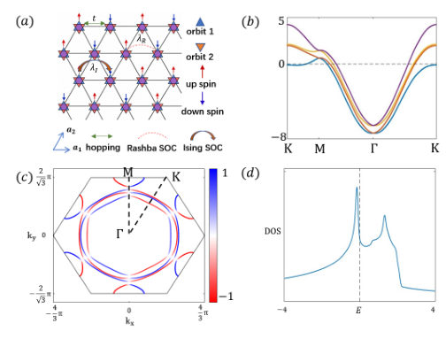
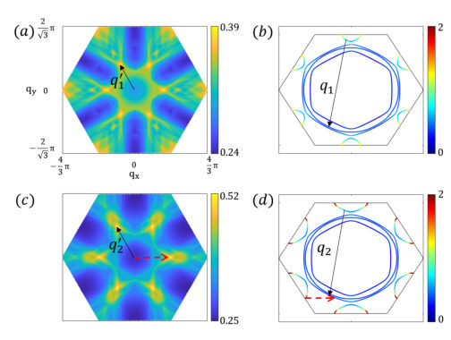
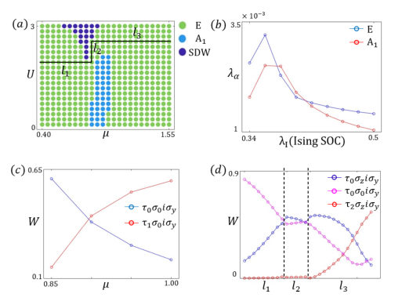
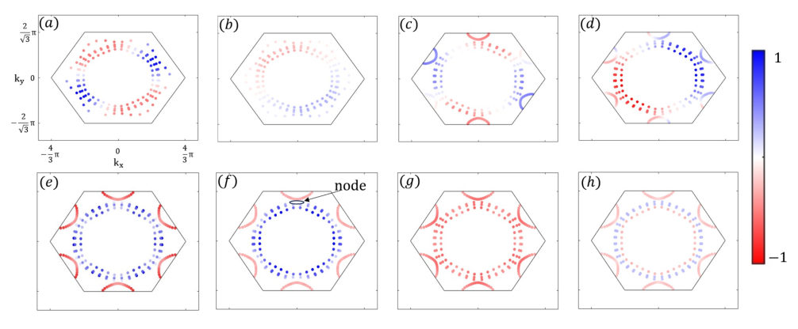
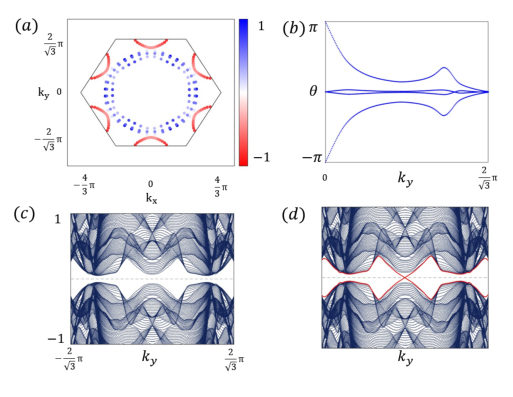
Summary. This theoretical work explores how Ising spin-orbit coupling fundamentally alters the pairing mechanism in correlated multi-orbital superconductors. By analyzing a triangular-lattice model, the authors show that SOC can reconstruct the pairing channels, leading to the coexistence of distinct superconducting phases, including a topologically non-trivial singlet state. This establishes a microscopic pathway for interaction-driven superconductivity in complex electronic systems.
Why it may be interesting. The mechanism of pairing reconstruction driven by SOC and orbital degrees of freedom is highly relevant to understanding unconventional superconductivity in correlated materials, bridging concepts from magnetism, topology, and strong correlations.
Main problem. The study investigates how Ising spin-orbit coupling (SOC) can qualitatively reconstruct the hierarchy of spin-fluctuation-mediated pairing channels in correlated multi-orbital systems.
Main result. The system can host both an Ising-triplet dominated E-sector and a topologically non-trivial, fully gapped singlet-dominated A1 superconducting phase, demonstrating SOC's role in reconstructing pairing symmetry.
Method. The pairing problem is solved using a multi-orbital random-phase-approximation (RPA) framework applied to the linearized Eliashberg equation.
Model / system. The model is a noncentrosymmetric two-orbital triangular-lattice system incorporating Rashba, Ising, and onsite SOC terms into the normal-state Hamiltonian.
Key observables. Superconducting order parameter components (E vs. A1), topological invariants ($\mathbb{Z}_2$ index, Wilson-loop spectral flow), and the superconducting gap structure (DOS).
Important parameters / regimes. Ising SOC strength ($\lambda_I$), orbital hybridization strength, and the ratio of different SOC couplings.
Assumptions / limitations. The analysis uses an effective intra-orbital Hubbard repulsion to isolate the effect of SOC-induced band and coherence-factor reconstruction.
Figures summary. Figures illustrate the normal-state electronic structure, Fermi surface spin polarization, and the topological characterization of the A1 superconducting state, showing nontrivial spectral flow.
Paper structure. The paper progresses from establishing the normal-state electronic structure influenced by SOC, to solving the pairing instability via RPA, and finally characterizing the resulting superconducting symmetry and topological properties using Ginzburg-Landau theory and BdG analysis.
Ising spin-orbit coupling (SOC) is widely known for locking electronic spins and protecting superconductivity against in-plane paramagnetic pair breaking. Here we show that, in a correlated multiorbital system, Ising SOC can play a qualitatively different role: it reconstructs the hierarchy of spin-fluctuation-mediated pairing channels by reshaping the low-energy Fermi surfaces, orbital-spin coherence factors, and momentum-resolved scattering phase space. We study a noncentrosymmetric two-orbital triangular-lattice model with Rashba SOC, Ising SOC, and onsite SOC. We solve the pairing problem within a multiorbital random-phase-approximation framework. In the single-orbital limit, an $E$-representation state with a dominant $S_z=0$ component emerges only at relatively strong Ising SOC. Orbital degrees of freedom facilitate the stabilization of this pairing state at a smaller nominal Ising SOC strength and generate a broad competition between $E$ and $A_1$ pairing channels. The $E$ state can maintain the same $S_z=0$ triplet character, whereas the $A_1$ state becomes a fully gapped sign-changing $\splusminus$ superconductor. The latter also realizes a topologically nontrivial phase in the time-reversal-invariant weak-pairing regime, with a nonzero $\mathbb{Z}_2$ index, Wilson-loop spectral flow, and boundary modes. Its topology is not carried by a single orbital pairing component, but emerges cooperatively from the dominant intra- and inter-orbital pairing components. These results establish a microscopic route by which Ising SOC and orbital hybridization can reconstruct interaction-driven superconductivity, producing both Ising-triplet and topological singlet-dominated phases in correlated non-centrosymmetric systems.
Authors: Georgii K. Vandyshev, Grigorii S. Gorkaev, Nikolay D. Kondratyuk, Kirill M. Gerke, Ilia V. Kopanichuk
Type: theory · Category: statistical mechanics · PDF: https://arxiv.org/pdf/2610.21996v1
Analysis basis: full PDF text, analyzed in chunks
Topic relevance: quantum measurements 1/5
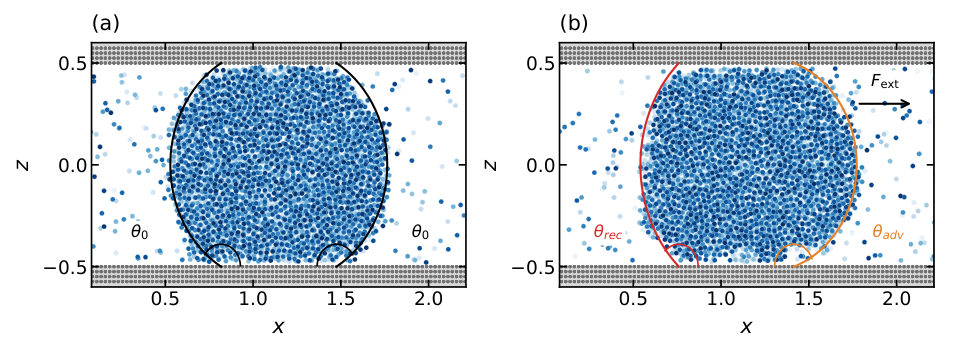
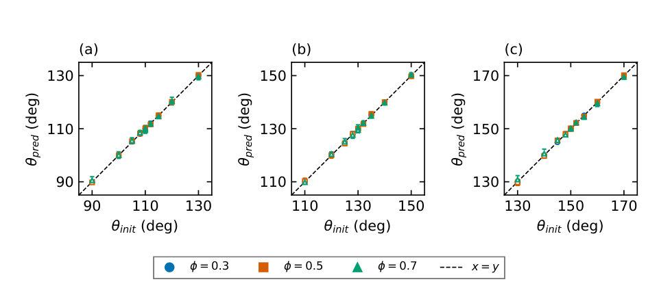
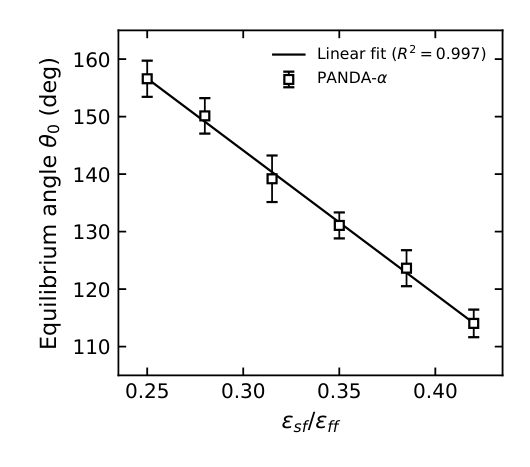
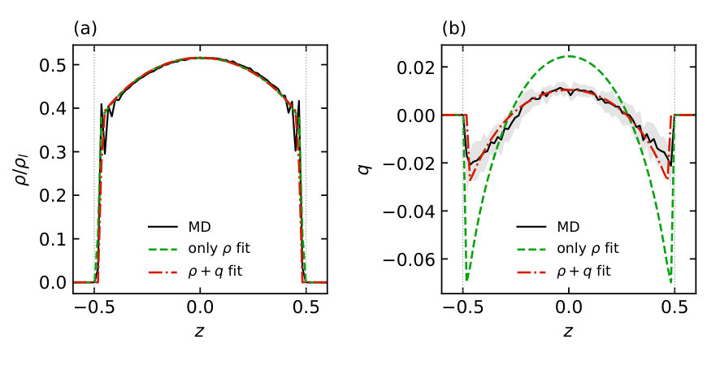
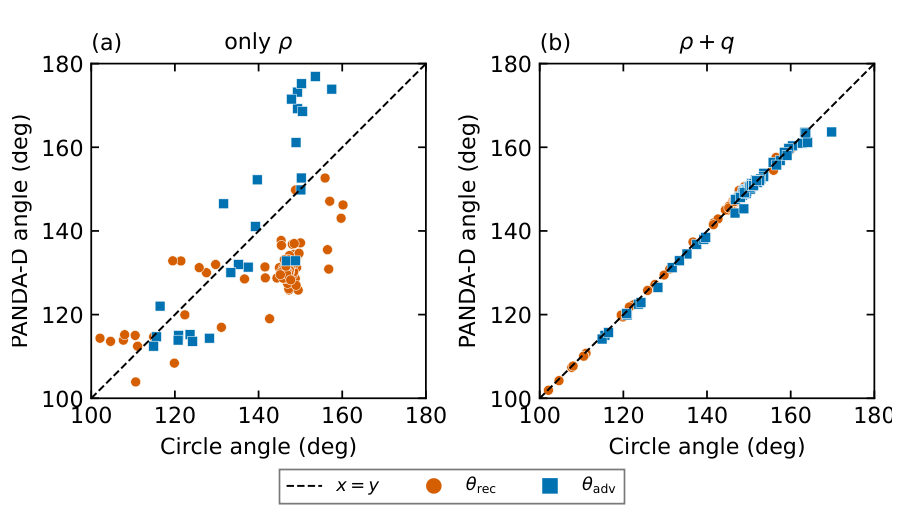
Summary. This paper introduces PANDA-D, a novel computational method to determine dynamic contact angles in molecular simulations by jointly fitting density and layerwise center-of-mass displacement profiles. It overcomes the ambiguity of traditional interface detection by using two correlated observables. The method proves highly accurate and robust, providing a reproducible tool for analyzing wetting behavior under external forces.
Why it may be interesting. While focused on fluid dynamics, the rigorous application of joint profile fitting to resolve an ill-posed inverse problem (identifying advancing vs. receding menisci) shares methodological parallels with reconstructing complex quantum states or dynamics from limited, correlated measurements.
Main problem. The paper addresses the challenge of accurately determining dynamic contact angles ($ heta_{adv}$ and $ heta_{rec}$) at solid-fluid interfaces in molecular simulations without relying on ambiguous 2D interface contour extraction.
Main result. The proposed PANDA-D method successfully determines both dynamic contact angles by jointly fitting density and layerwise center-of-mass displacement profiles, achieving agreement with independent measurements within $0.84^\circ$ RMSE.
Method. PANDA-D extends the PANDA method by performing a joint fit of two observables—the density profile and the layerwise center-of-mass displacement—to a geometric model based on circular menisci.
Model / system. The study models a liquid bridge (roll) spanning a slit between crystalline solid walls, simulated using Molecular Dynamics with a Lennard-Jones potential. The analysis focuses on non-equilibrium wetting phenomena driven by external forces.
Key observables. Dynamic contact angles ($ heta_{adv}, heta_{rec}$), density profile, layerwise center-of-mass displacement profile, and the dependence of angles on applied external force ($F_{ext}$).
Important parameters / regimes. Wall-fluid attraction strength ($\epsilon^*_{sf}$), applied external force ($F_{ext}$), and the pore height ($H$).
Assumptions / limitations. The method assumes that the menisci can be accurately mapped to circular arcs via a geometric forward model, and that the joint fit of density and displacement resolves the ambiguity inherent in density-only analysis.
Figures summary. Figures illustrate molecular configurations of liquid rolls (equilibrium and force-driven), compare synthetic angle recoveries, and plot the dependence of receding and advancing angles on applied force, comparing results to independent circle-fit estimates.
Paper structure. The paper introduces PANDA-D by first validating it on synthetic rolls, then applying it to force-driven Lennard-Jones rolls, demonstrating the superiority of the joint density/displacement fit over density-only fits, and finally analyzing the linear force dependence of the resulting angles.
Contact angles are central descriptors of wetting and capillary behavior at solid--fluid interfaces. Dynamic contact angles in molecular simulations are commonly extracted from two-dimensional liquid--vapor contours and near-wall tangent fits. We introduce PANDA-D, an extension of Predicting Angle from Nanoscale Density Analysis (PANDA) that determines both contact angles of a driven liquid roll without extracting an interface. The density profile measures occupied layer width but does not identify which meniscus is advancing. The method resolves this ambiguity by jointly fitting density and the layerwise center-of-mass displacement relative to the roll. A circular-meniscus model maps these profiles to receding and advancing angles and an effective near-wall offset. On synthetic rolls with prescribed angles, the reconstruction error is $0.29^\circ$ root-mean-square. We then analyze force-driven Lennard--Jones rolls between crystalline walls. Joint fits reproduce both measured profiles, whereas density-only fits can match density while assigning incorrect asymmetry. The resulting angles agree with independently determined circle-fit angles to $0.84^\circ$ root-mean-square. Across four wall--fluid attractions, the receding angle decreases and the advancing angle increases with force, approximately linearly over the studied ranges. By eliminating contour thresholds and near-wall tangent extrapolation from the primary estimate, the two-profile approach enables reproducible, automated angle analysis across molecular trajectories.
Authors: Seerat Khan, SK Firoz Islam
Type: theory · Category: other · PDF: https://arxiv.org/pdf/2610.21416v1
Analysis basis: full PDF text, analyzed in chunks
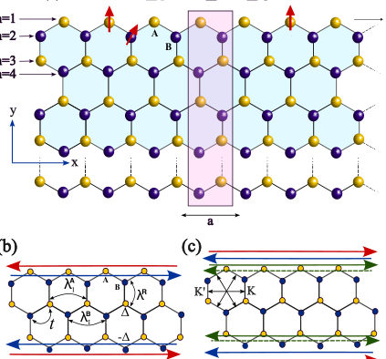
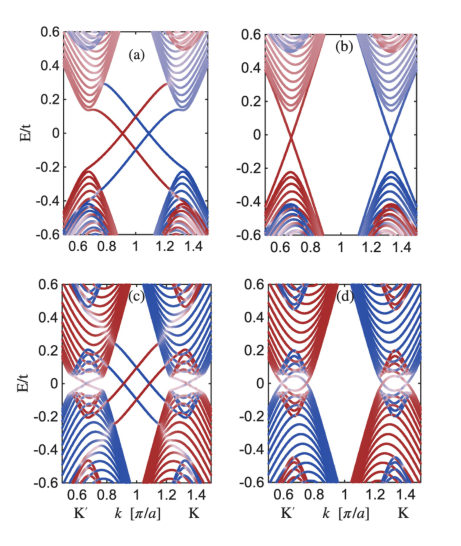
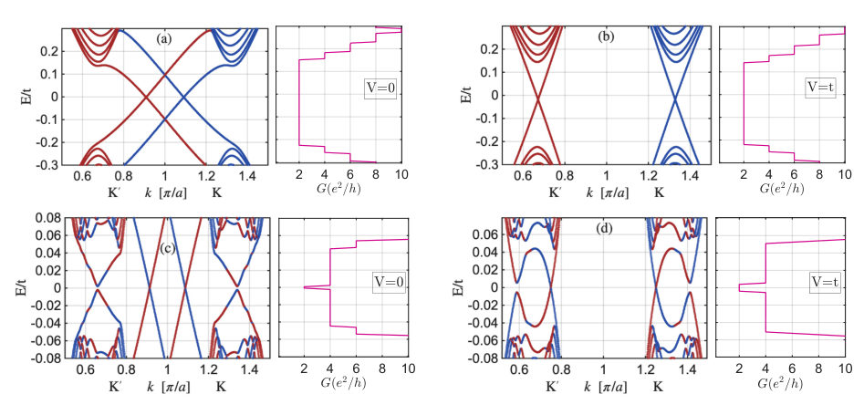
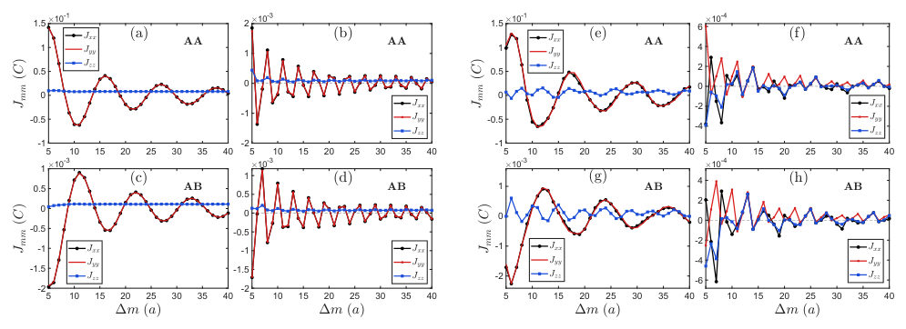
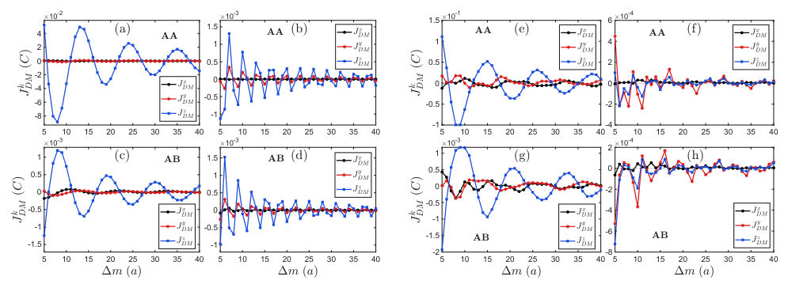
Summary. This theoretical work analyzes edge state reconstruction in graphene nanoribbons subjected to proximity-induced spin-orbit coupling. The authors demonstrate that while standard charge conductance measurements fail to detect these changes, the Ruderman-Kittel-Kasuya-Yosida (RKKY) magnetic interaction provides a superior, highly sensitive probe. By analyzing the RKKY terms, they establish a clear signature of edge state reconstruction in the magnetic coupling strength.
Why it may be interesting. The use of the RKKY interaction as a highly sensitive, spin- and sublattice-resolved probe for subtle electronic structure changes (like edge state reconstruction) is valuable for understanding correlated phenomena in low-dimensional quantum materials.
Main problem. The paper investigates edge state reconstruction in proximitized graphene nanoribbons and proposes using the RKKY interaction as a sensitive diagnostic tool to probe these changes.
Main result. The RKKY interaction exhibits distinct features, such as faster oscillations and changes in the DM term amplitudes, that are sensitive to the edge state reconstruction, unlike charge conductance measurements.
Method. The study uses theoretical calculations involving the tight-binding Hamiltonian, solving for the spin susceptibility, and deriving the RKKY magnetic exchange interaction terms.
Model / system. The system is a zigzag graphene nanoribbon placed on a substrate, inducing proximity-mediated spin-orbit coupling (SOC). The model incorporates nearest-neighbor hopping, intrinsic SOC, Rashba SOC, and an on-site edge potential.
Key observables. RKKY exchange tensor components ($J_{mm}, J_{lm}, J^k_{DM}$), edge state band dispersion, and the oscillation frequency of the RKKY interaction terms.
Important parameters / regimes. Edge potential strength ($V=0$ vs $V=t$), SOC type (uniform vs staggered), and the separation distance between magnetic impurities.
Assumptions / limitations. Charge conductance is insufficient to capture the reconstruction; the RKKY calculation relies on second-order perturbation theory and the spectral representation of the Green's function.
Figures summary. Figures illustrate the energy spectrum comparing cases with and without edge potential, and plot the Heisenberg and DM components of the RKKY exchange tensor as a function of impurity separation for different SOC regimes.
Paper structure. The paper first establishes the physical model and the limitations of conductance measurements. It then derives the RKKY interaction using spin susceptibility and presents detailed calculations showing how the RKKY terms respond to the edge potential, contrasting the results for uniform and staggered SOC.
Proximity induced spin-orbit coupling (SOC) in graphene emerges when it is placed on a substrate, breaking sublattice symmetry and giving rise to staggered intrinsic SOC together with Rashba spin-orbit coupling. In zigzag graphene nanoribbons, this staggered SOC produces pseudohelical edge states exhibiting sublattice-locked rather than spin-locked helicity. We investigate the effect of a finite on-site potential, restricted to the edges of the ribbon, on these edge states. We find the inter-valley edge states undergo reconstruction and become purely intra-valley, exhibiting both spin and valley polarization. The charge conductance calculations fail to capture this reconstruction, since the number of transmitted channels remains unchanged. We show that the Ruderman-Kittel-Kasuya-Yosida (RKKY) magnetic exchange interaction, between two magnetic impurities situated on the ribbon edge can be used to probe the shifted band dispersion, for both the uniform and staggered spin-orbit coupling. In the presence of strong intrinsic and Rashba SOC, the RKKY interaction becomes fully anisotropic. Both sublattice staggering and edge potential-induced reconstruction lead to distinct features in the RKKY interaction. We show that the RKKY interaction terms acquire faster oscillations as a function of the spatial separation between two magnetic impurities, in response to the edge state reconstruction, establishing it as an effective probe of the edge states. Additionally, the significant mismatch in the amplitudes of the DM term corresponding to the uniform and staggered SOC, can also act as a probe of the type of SOC.
Authors: Colin Kirkbride, Christopher E A Barker, Timothy Moorsom, Kayla Fallon, Daniel Roe, Trevor Almeida, Sara Villa, Christopher H Marrows, Stephen McVitie
Type: both · Category: other · PDF: https://arxiv.org/pdf/2610.21704v1
Analysis basis: full PDF text, analyzed in chunks
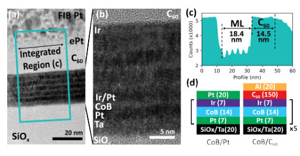
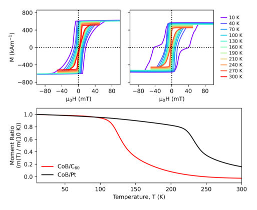
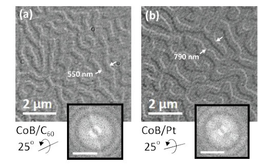
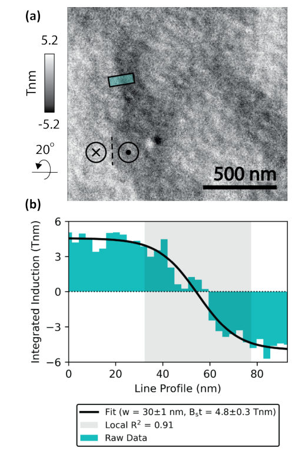
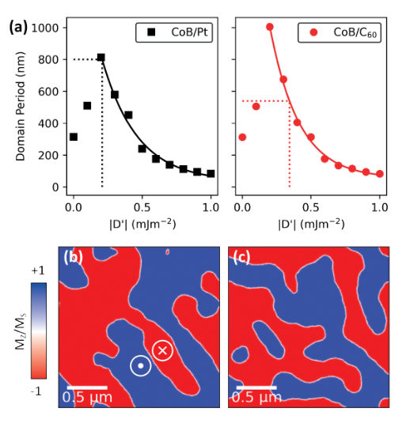
Summary. This work demonstrates that depositing C60 molecular films can act as an effective, non-hybridizing gate to control the magnetic spin textures in buried metallic multilayers. By enhancing the interfacial Dzyaloshinskii-Moriya Interaction (iDMI) through spin-orbit coupling at the C60/Ir interface, the C60 layer causes a measurable contraction of the magnetic domain period. This offers a promising route for designing next-generation spintronic devices.
Why it may be interesting. While focused on magnetism, the concept of using molecular interfaces to tune fundamental quantum interactions like DMI via SOC provides a model for engineering quantum materials interfaces.
Main problem. The study addresses how organic molecules, specifically C60 films, can indirectly modulate the magnetic spin texture buried within metallic multilayer systems.
Main result. C60 deposition significantly reduces the magnetic domain periodicity by enhancing the effective magnetic anisotropy and the interfacial Dzyaloshinskii-Moriya Interaction (iDMI).
Method. The research combines advanced experimental techniques like Lorentz TEM and STEM-DPC with theoretical tools such as micromagnetic simulations and effective medium models.
Model / system. The physical system is a multilayer stack, typically Pt/CoB/Ir, where the magnetic properties are controlled by the introduction of a C60 molecular capping layer.
Key observables. Magnetic domain periodicity, domain wall widths, effective magnetic anisotropy (K_eff), and interfacial DMI strength (|D|).
Important parameters / regimes. The influence of C60-induced modification of spin-orbit coupling (SOC) at the C60/Ir interface.
Assumptions / limitations. The mechanism relies on the C60 modifying the iDMI via SOC, and simulations use an effective medium model.
Figures summary. Figures illustrate the full stack structure and atomic columns, while measurements compare domain periods and wall widths between C60-capped and Pt-capped samples.
Paper structure. The paper establishes the problem of organic modulation of magnetism, presents experimental measurements comparing C60 vs. Pt capping, derives enhanced magnetic parameters (K_eff, DMI) for the C60 case, and concludes with a proposed SOC-mediated mechanism.
Understanding how organic materials modulate magnetic structure is a central challenge in organic spintronics. Here, we demonstrate that C$_{60}$ molecular films exert a pronounced and quantifiable influence on the buried magnetic spin texture in Pt/CoB/Ir based multilayer systems hosting interfacial Dzyaloshinskii-Moriya interaction (iDMI). Using Lorentz transmission electron microscopy, the magnetic domain behaviour in field-free and in-situ field environments is measured. In Fresnel mode, we reveal a reduction in magnetic domain periodicity upon C$_{60}$ deposition. Then, using pixelated 4D-STEM differential phase contrast mode, we establish that this modification arises from a substantial enhancement of effective magnetic anisotropy and interfacial DMI strength. Coupled with bulk magnetometry and micromagnetic simulations, we propose a mechanism based on spin-orbit coupling at the C$_{60}$/Ir interface which modifies the iDMI and drives a contraction of spin texture density throughout the multilayer stack. These findings extend the impact of organic molecular capping films as effective and accessible routes for engineering spin textures to buried magnetic multilayer systems, with direct implications for the design of next-generation spintronic and neuromorphic devices.